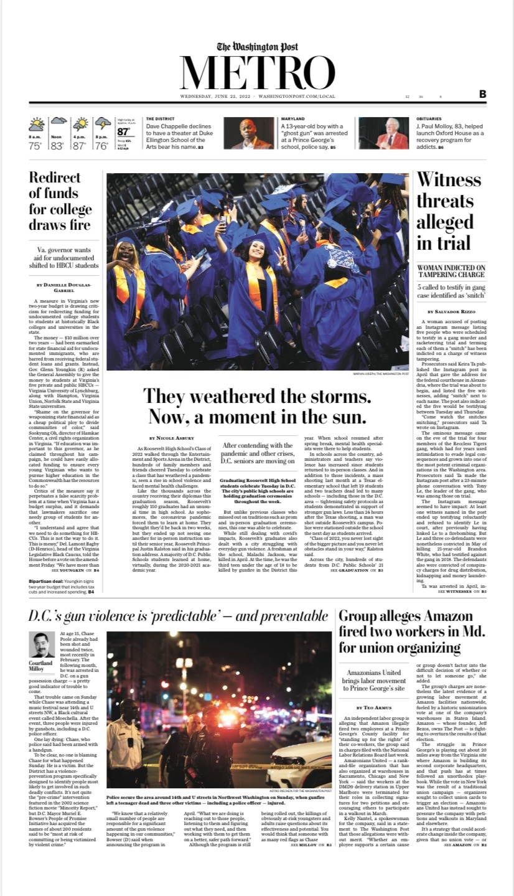
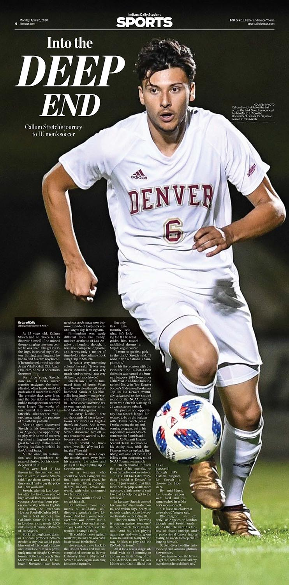
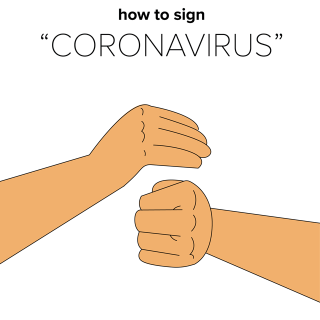

Design




See the Pen Untitled by Carson TerBush (@carsonology) on CodePen.
See the Pen Untitled by Carson TerBush (@carsonology) on CodePen.
See the Pen Untitled by Carson TerBush (@carsonology) on CodePen.
10/25/2021
5/28/2021
9/20/2020
12/15/2019